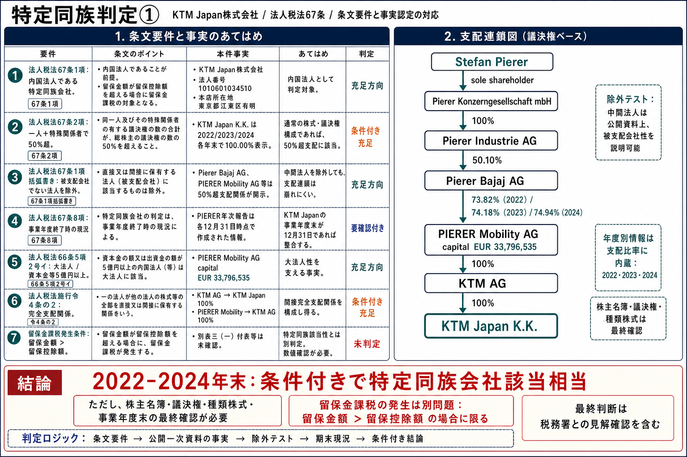

特定同族判定➀

この版の方針。条文要件と一次ソース上の事実を対応させ、引用、認定、あてはめ、結論の順に追える税務メモとして再構成した。引用は短く抑え、各引用元へ、該当条文又はハイライト済み一次ソースへの直接リンクを付した。v2では、年次報告PDFについて参照ページだけを切り出し、該当文言を黄色でハイライトしたローカルPDFにもリンクした。
特に、「被支配会社でない法人を除外して判定する」問題を、単なる補足ではなく判定フローの中心に置いた。
PIERER Mobility AG年次報告では、KTM Japan K.K. は2022年、2023年、2024年の各期末に100.00%のグループ会社として掲載されている。上位のPIERER Mobility AGも、Pierer Bajaj AGによる過半支配、さらにPierer Industrie AG / Pierer Konzerngesellschaft mbH / Stefan Pierer へ連なる支配関係が開示されている。
年次報告の “interest 100.00%” は、日本法上の株主名簿・議決権・自己株式・種類株式を直接示す資料ではない。KTM Japan株式会社の事業年度末が12月31日であること、かつ同社の株主名簿・議決権資料が年次報告と整合することを最終確認条件とする。
0. 結論の読み方
| 判断対象 | 判定 | 一次ソースとの対応 |
|---|---|---|
| 2022-2024年12月31日時点 | 条件付き該当相当 | PIERER年次報告のKTM Japan K.K. 100.00%表示、PIERER Mobility AG側の上位支配関係、法人税法67条の50%超・除外テスト・期末判定を対応させて判断する。 |
| 2020-2021年 | 要精査 | PIERER起点の表示が51.71%又は99.75%であり、KTM AG起点の直接株主・議決権資料がないと同じ強度では判定しない。 |
| 2025年以降 | 再判定 | Bajaj側への支配移転後であり、Bajaj Auto側のPromoter Groupを日本法人税法上の特殊関係者へ翻訳できるかを別途確認する。 |
| 実際の留保金課税額 | 未判定 | 別表三（一）・付表、別表四、別表五（一）、配当資料等が必要。特定同族会社該当性だけでは税額発生まで言えない。 |
1. 判定フロー
2. 条文要件
| 要件 | 短い条文引用 | この案件での読み方 | 一次ソース |
|---|---|---|---|
| 特定同族会社と税額発生 |
法人税法67条1項: 「内国法人である特定同族会社」について、「留保金額が留保控除額を超える場合」に特別税率を適用する構造。
|
特定同族会社該当性の判定と、留保金課税額の発生判定を分ける。 | Lawzilla 法人税法67条1項 |
| 被支配会社 |
法人税法67条2項: 株主等の一人と特殊関係者が、発行済株式等の総数・総額の「百分の五十を超える」数又は金額を有する会社。
|
KTM Japan単体では、直接・間接のグループ支配で50%超となるかを見る。 | Lawzilla 法人税法67条2項 |
| 除外テスト |
法人税法67条1項括弧書き: 判定基礎となった株主等のうちに「被支配会社でない法人」がある場合、その法人を除外して判定する趣旨。
|
ここが本件の重要点。上位法人を漫然と足すのではなく、KTM AG、PIERER Mobility AG、Pierer Bajaj AG等がそれぞれ被支配会社として説明できるかを確認する。 | Lawzilla 法人税法67条1項括弧書き |
| 判定時点 |
法人税法67条8項: 特定同族会社該当性は、「当該事業年度終了の時の現況」による。
|
PIERER年次報告は12月31日時点資料なので、KTM Japanの事業年度末が12月31日なら接続しやすい。違う場合は当該事業年度末資料が必要。 | Lawzilla 法人税法67条8項 |
| 大法人・完全支配関係 |
法人税法66条5項2号イ: 大法人は、「資本金の額又は出資金の額が五億円以上」である法人を含む。法人税法施行令4条の2は、直接・間接の支配関係、完全支配関係を定める。
|
PIERER Mobility AGの資本金 EUR 33,796,535 について、KTM Japanの各事業年度終了の日の電信売買相場の仲値（TTM）で円換算し、五億円以上性を確認したうえで、グループ会社100%保有表示と接続する。 | Lawzilla 法人税法66条5項2号イ / Lawzilla 法人税法施行令4条の2 / 法人税基本通達16-5-2（ハイライト） |
| 国税庁説明 |
国税庁 No.5800 は、大法人の100%子法人等について中小企業向け特例措置が不適用となり、特定同族会社に該当する可能性が生じると説明する。
|
法令の実務的入口として使う。ただし、最終判定は法67条・66条・施行令の要件に戻す。 | 国税庁 No.5800（ハイライト） |
3. 一次ソースで固めた事実
| 年度 | 一次ソース引用・事実認定 | 判定での意味 | リンク |
|---|---|---|---|
| 法人実体 |
引用: 「法人番号 1010601034510」
Gビズインフォは、ＫＴＭ Japan株式会社の法人番号を1010601034510、本店所在地を東京都江東区有明3丁目5番7号として掲載している。
|
内国法人・対象法人の特定。株主情報まではGビズインフォでは埋まらない。 | Gビズインフォ（ハイライト） |
| 2022 |
引用: “KTM Japan K.K.” / “100.00”
PIERER Mobility AG Annual Report 2022 は、KTM Japan K.K., Tokyo, Japan を2022年12月31日時点で100.00%、2021年比較で99.75%として掲載。KTM AGも2022年12月31日時点で100.00%。同年のsqueeze-outによりKTM AG残余持分0.2%がPIERER Mobility AGへ移転した旨も記載。確認箇所: PDF抽出 p.69、p.211。
|
KTM JapanがKTM AG / PIERER Mobilityグループに100%入っていることの一次資料。ただし「interest」表示であり、日本法上の議決権・株主名簿の代替ではない。 | 切出PDF（黄色ハイライト付き・参照ページのみ: p.69, p.70, p.208, p.211） Annual Report 2022 ハイライトPDF |
| 2022 |
引用: “Pierer Bajaj AG” / “73.82%”
同Annual Reportは、Pierer Bajaj AGがPIERER Mobility AGの約73.8%を保有し、関連当事者注記でPierer Bajaj AG 73.82%、同社はPierer Industrie AG 50.10%保有、Pierer Industrie AGはPierer Konzerngesellschaft mbH 100%保有、同mbHの唯一株主はStefan Piererと記載。確認箇所: PDF抽出 p.70、p.208。
|
「被支配会社でない法人を除外」テストに対し、上位法人がそれぞれ50%超支配を受けていることを説明する根拠。 | 切出PDF（黄色ハイライト付き・参照ページのみ: p.69, p.70, p.208, p.211） Annual Report 2022 ハイライトPDF |
| 2023 KTM Japan持分 |
引用: “KTM Japan K.K., Tokyo, Japan” / “100.00 FCA 100.00 FCA”
PIERER Mobility AG Annual Report 2023 は、KTM Japan K.K., Tokyo, Japan を12/31/2023欄・12/31/2022欄とも100.00%として掲載している。確認箇所: PDF抽出 p.214。
|
KTM Japanが2023年末もPIERER Mobility AG / KTM AGグループの100%持分会社として扱われていることの一次資料。 | 切出PDF（黄色ハイライト付き・参照ページのみ: p.68, p.211, p.214） Annual Report 2023 ハイライトPDF |
| 2023 株主構造 |
引用: “Pierer Bajaj AG” / “74.16%”
同Annual ReportのInvestor Relations章は、2023年12月31日時点の株主構造として、Pierer Bajaj AGがPIERER Mobility AGの株式資本約74.16%を保有すると記載している。確認箇所: PDF抽出 p.68。
|
PIERER Mobility AGが2023年末にPierer Bajaj AGから50%超支配を受けていることの株主構造ベースの根拠。 | 切出PDF（黄色ハイライト付き・参照ページのみ: p.68, p.211, p.214） Annual Report 2023 ハイライトPDF |
| 2023 関連当事者注記 |
引用: “74.18 %” / “50.10 % owned” / “sole shareholder”
同Annual Reportの関連当事者注記は、2023年12月31日時点でPierer Bajaj AGがPIERER Mobility AG株式74.18%を保有し、Pierer Bajaj AGはPierer Industrie AGに50.10%保有され、Pierer Industrie AGはPierer Konzerngesellschaft mbHの100%子会社であり、同mbHの唯一株主はStefan Piererであると記載している。確認箇所: PDF抽出 p.211。
|
2023年末の除外テストについても、公開一次資料上は中間法人を「被支配会社」として説明できる。 | 切出PDF（黄色ハイライト付き・参照ページのみ: p.68, p.211, p.214） Annual Report 2023 ハイライトPDF |
| 2024 |
引用: “holding company of KTM AG”
PIERER Mobility AG Annual Financial Report 2024 は、KTM Japan K.K., Tokyo, Japan を2024年12月31日時点・2023年比較とも100.00%として掲載。PIERER Mobility AGはKTM AGのholding companyであるとも説明。確認箇所: PDF抽出 p.4、p.223。
|
2024年末もKTM Japanの100%グループ持分が継続。KTM AG再建手続の存在はあるが、持分表示自体は100%として残っている。 | 切出PDF（黄色ハイライト付き・参照ページのみ: p.4, p.124, p.181, p.218, p.223） Annual Financial Report 2024 ハイライトPDF |
| 2024 |
引用: “EUR 33,796,535” / “74.94%”
同Annual Financial Reportは、PIERER Mobility AGの資本金をEUR 33,796,535、Pierer Bajaj AGの持分を74.94%、Pierer Bajaj AGがPierer Industrie AG 50.10%・Bajaj Auto International Holdings B.V. 49.9%により保有されること、Pierer Industrie AGがPierer Konzerngesellschaft mbH 100%保有であることを記載。確認箇所: PDF抽出 p.124、p.181、p.218。
|
大法人性、完全支配関係、被支配会社性を検討する中核事実。PIERER Mobility AGの資本金は、法人税基本通達16-5-2に従い、KTM Japanの各事業年度終了の日のTTMで円換算して確認する。 | 切出PDF（黄色ハイライト付き・参照ページのみ: p.4, p.124, p.181, p.218, p.223） Annual Financial Report 2024 ハイライトPDF |
| 2025以降 |
引用: “Bajaj acquires sole control” / “approximately 74.9%”
Bajaj Mobility AGの2025年11月18日発表は、Bajaj Auto International Holdings B.V.がPierer Industrie AG保有のPierer Bajaj AG株式を取得し、Pierer Bajaj AGの唯一株主となり、PIERER Mobility AGの約74.9%を支配する多数株主になったと公表。確認箇所: Web本文の発表見出し及び支配移転説明。
|
2025年以降は「非該当」ではなく、Pierer側からBajaj側へ支配者を置換して再判定する局面。 | Bajaj Mobility 2025-11-18 release（ハイライト） |
3.1 PIERER Mobility AG Annual Report 2023 のPDF抽出ページ対応表
同一の認定文に複数ページをまとめず、各ページから認定できる事実を一対一で整理する。
| 証拠ID | 認定内容 | PDF抽出ページ | 短い引用 | 判定での使い方 | リンク |
|---|---|---|---|---|---|
| P2023-214 | KTM Japan K.K., Tokyo, Japan は12/31/2023欄・12/31/2022欄とも100.00%表示。 | p.214 | “KTM Japan K.K., Tokyo, Japan” / “100.00 FCA 100.00 FCA” | KTM Japanのグループ持分100%表示を支える。日本法上の株主名簿・議決権資料は別途確認。 | 2023 ハイライトPDF |
| P2023-068 | 2023年12月31日時点の株主構造として、Pierer Bajaj AGがPIERER Mobility AGの株式資本約74.16%を保有。 | p.68 | “Pierer Bajaj AG” / “74.16%” | PIERER Mobility AGがPierer Bajaj AGから50%超保有されていることを、株主構造章から確認する。 | 2023 ハイライトPDF |
| P2023-211 | 関連当事者注記上、Pierer Bajaj AGはPIERER Mobility AG株式74.18%を保有し、上位にPierer Industrie AG、Pierer Konzerngesellschaft mbH、Stefan Piererが連なる。 | p.211 | “74.18 %” / “50.10 % owned” / “sole shareholder” | 被支配会社でない法人の除外テストに対し、中間法人側の50%超支配関係を確認する。 | 2023 ハイライトPDF |
4. 条文へのあてはめ
4.1 KTM Japanが被支配会社か
PIERER年次報告上、KTM Japan K.K. は2022年から2024年まで各12月31日時点で100.00%のグループ会社として掲載されている。通常の株式・議決権構成であれば、KTM Japanは一人又は特殊関係者グループにより50%超を保有される会社、すなわち法人税法67条2項の被支配会社に当たる方向で評価できる。
ただし、年次報告の連結持分表示は、KTM Japan株式会社の日本法上の発行済株式総数、自己株式、種類株式、議決権制限、株主名簿を直接証明するものではない。そのため、実務上は同社の株主名簿又は申告書別表二の株主欄で最終確認する。
4.2 「被支配会社でない法人を除外」しても崩れないか
この点が前版で弱かった部分である。法人税法67条1項括弧書きは、被支配会社判定の基礎に入れた法人の中に「被支配会社でない法人」がある場合、その法人を除外する考え方を入れている。したがって、単に「KTM JapanはPIERERグループ100%」と言うだけでは足りない。
| 中間法人・上位者 | 一次ソース上の支配事実 | 除外テスト上の評価 |
|---|---|---|
| KTM AG | 2022年末以降、PIERER Mobility AG側で100.00%表示。2022年のsqueeze-out後、残余0.2%もPIERER Mobility AGへ移転。 | 被支配会社として扱う根拠がある。ここで除外される前提ではない。 |
| PIERER Mobility AG | 2022年末73.82%、2023年末74.18%、2024年末74.94%をPierer Bajaj AGが保有。 | 一法人が50%超を保有しており、被支配会社性を説明できる。上場会社であることだけでは除外理由にならない。 |
| Pierer Bajaj AG | 2022-2024年はPierer Industrie AGが50.10%保有、Bajaj Auto International Holdings B.V.が49.9%保有。 | Pierer Industrie AG単独で50%超を保有するため、公開資料上は被支配会社性を説明できる。 |
| Pierer Industrie AG / Pierer Konzerngesellschaft mbH / Stefan Pierer | Pierer Industrie AGはPierer Konzerngesellschaft mbHの100%子会社。同mbHの唯一株主はStefan Piererと記載。 | 個人Stefan Piererへ支配をたどる説明が可能。2022-2024のPierer側判定を支える。 |
したがって、公開一次資料ベースでは、2022-2024年の判定で中間法人を除外した途端に50%超支配が崩れる、という構造ではない。ただし、日本法人KTM Japanの議決権種類、自己株式、直接株主名義が非公開であるため、申告・税務調査レベルでは内部資料による補強が必要である。
4.3 大法人による完全支配関係
国税庁No.5800は、資本金の額又は出資金の額が五億円以上である法人等による100%子法人等について中小企業向け特例が不適用となり、特定同族会社に該当する可能性が生じると説明している。PIERER Mobility AGの資本金は2024年報告上EUR 33,796,535であり、KTM AG及びKTM Japan K.K.は100.00%表示で連結範囲に入る。
外国法人であるPIERER Mobility AGについては、法人税基本通達16-5-2に従い、KTM Japanの各事業年度終了の日の電信売買相場の仲値（TTM）で資本金の額又は出資金の額を円換算し、五億円以上性を確認する。そのうえで、直接間接保有及び議決権一致を確認できる限り、KTM Japanは大法人による完全支配関係がある普通法人として扱う方向が自然である。
5. 年度別結論
| 年度末 | 結論 | 理由 | 未確認条件 |
|---|---|---|---|
| 2022-12-31 | 条件付き該当相当 | KTM Japan K.K. 100.00%、KTM AG 100.00%、PIERER Mobility AGはPierer Bajaj AG 73.82%支配、Pierer側の上位支配関係も開示。 | KTM Japanの事業年度末、株主名簿、議決権、自己株式、種類株式。 |
| 2023-12-31 | 条件付き該当相当 | KTM Japan K.K. 100.00%、PIERER Mobility AGはPierer Bajaj AG 74.18%支配、Pierer側上位支配関係も継続。 | 同上。 |
| 2024-12-31 | 条件付き該当相当 | KTM Japan K.K. 100.00%、PIERER Mobility AGはPierer Bajaj AG 74.94%支配。KTM再建手続はあるが、12月31日時点の持分表示は100.00%。 | 同上。再建手続に伴う株式・議決権変更の有無は要確認。 |
| 2025以降 | 再判定 | Bajaj Auto International Holdings B.V.がPierer Bajaj AGの唯一株主となり、PIERER Mobility AG約74.9%の支配者がBajaj側へ移った。 | Bajaj側の法人・株主・資本金・完全支配関係、KTM Japanの各事業年度末の株主情報。 |
6. 最終確認に必要な資料
- KTM Japan株式会社の各対象事業年度の決算期末日。PIERER資料は12月31日基準なので、KTM Japanの事業年度末と一致するかが重要。
- 各対象年度末の株主名簿、株式数、議決権数、自己株式、種類株式、議決権制限の有無。
- PIERER Mobility AGの各対象年度末の資本金額、及びKTM Japanの各事業年度終了の日におけるEUR/JPYの電信売買相場の仲値（TTM）。
- 法人税申告書別表二の株主欄、及び特定同族会社判定欄。
- 別表三（一）・付表一により、留保金額、留保控除額、課税留保金額が発生するか。
- 2025年以降については、Bajaj側の支配連鎖を日本法人税法上の「一人＋特殊関係者」「大法人」「完全支配関係」に落とし込む資料。
7. 外部提出用の短い結論文
公開一次資料によれば、KTM Japan K.K. はPIERER Mobility AG / KTM AGグループの100%持分子会社として、2022年、2023年及び2024年の各12月31日時点のPIERER Mobility AG年次報告に掲載されている。また、PIERER Mobility AGは各期末にPierer Bajaj AGにより50%超保有され、Pierer Bajaj AG及びその上位会社についてもPierer Industrie AG、Pierer Konzerngesellschaft mbH、Stefan Piererへ連なる支配関係が同年次報告に記載されている。
したがって、KTM Japan株式会社の各事業年度終了日が12月31日であり、同社の株主名簿、議決権、自己株式及び種類株式の状況が当該年次報告の100.00%持分表示と整合する限り、2022年から2024年の各対象年度について、同社は法人税法67条1項の特定同族会社に該当すると認定するのが相当である。ただし、実際の留保金課税は、同条1項のとおり、留保金額が留保控除額を超える場合に限り発生する。
8. 一次ソースリンク集
- Lawzilla 法人税法67条1項: https://lawzilla.jp/law/340AC0000000034?n=ln67.1&mode=only
- Lawzilla 法人税法67条2項: https://lawzilla.jp/law/340AC0000000034?n=ln67.2&mode=only
- Lawzilla 法人税法67条8項: https://lawzilla.jp/law/340AC0000000034?n=ln67.8&mode=only
- Lawzilla 法人税法66条5項2号イ: https://lawzilla.jp/law/340AC0000000034?n=ln66.5.2.1&mode=only
- Lawzilla 法人税法施行令4条の2: https://lawzilla.jp/law/340CO0000000097?n=ln4_2&mode=only
- 国税庁 No.5800: ハイライトHTML
- 法人税基本通達16-5-2: ハイライトHTML
- 国税庁 別表二 記載の仕方: ハイライトPDF
- 国税庁 別表三（一）付表一: ハイライトPDF
- Gビズインフォ KTM Japan株式会社: ハイライトHTML
- PIERER Mobility AG Annual Report 2022: ハイライトPDF
- PIERER Mobility AG Annual Report 2023: ハイライトPDF
- PIERER Mobility AG Annual Financial Report 2024: ハイライトPDF
- Bajaj Mobility AG 2025-11-18 release: ハイライトHTML
注: PIERER/Bajaj年次報告のページ番号はPDF抽出ベースで確認した。HTML本文では、引用過多を避けるため、短い引用と事実認定の要約を併用している。